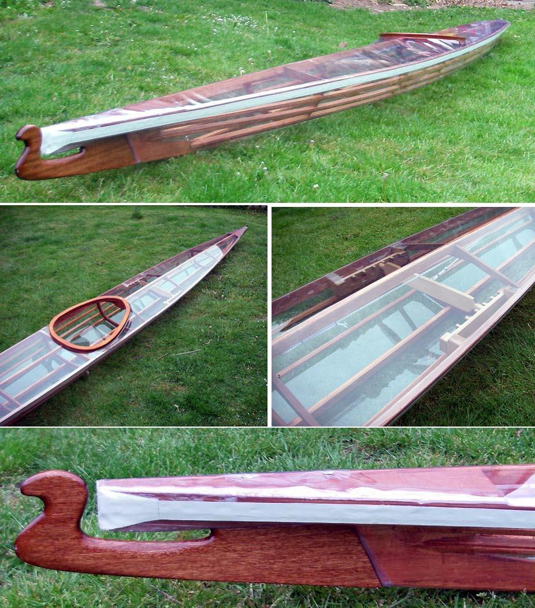

| Nikumi by Niels Ginge (DK) | Menu Previous Page Next Page |
|

Niels Ginge from Denmark has completed a Nikumi "Iqyax" with a clear vinyl skin. He has included adjustable footbraces of his own design as well as a newer bifid bow design. Use the {Back} key to return.
|
|